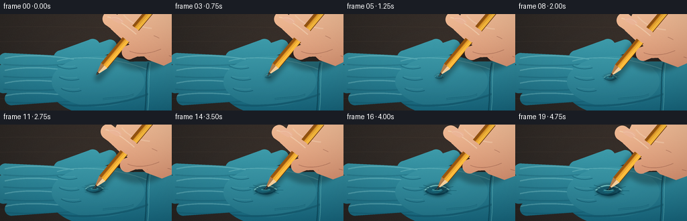
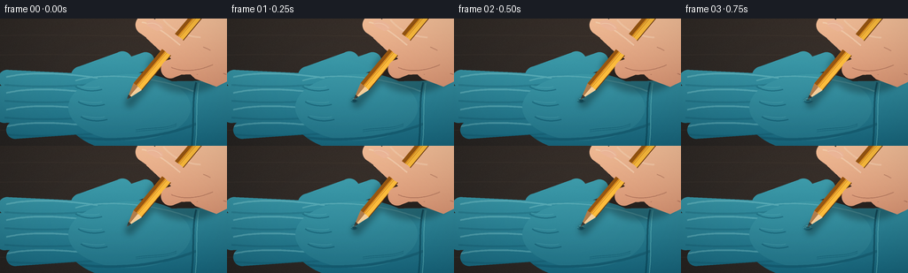
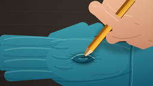

CODING AGENTS AS PIXEL WORLD MODELS
traex/GPT-5.6-Sol · mechanics_0034
点击播放 · 原生 RGB 像素
逐轮保存的候选
回放视频、检查图与代码变化。
每份候选均可单独播放。实际图片检查记录在下方工具轨迹中。
候选 01播放与检查图
点击播放 · 原生 RGB 像素


展开代码变化
--- 上一保存版本
+++ 本次保存版本
@@ -0,0 +1,245 @@
+from pathlib import Path
+import math
+import numpy as np
+from PIL import Image, ImageDraw, ImageFilter
+import artifact_io
+
+W,H,N,S = 256,144,20,4
+rng = np.random.default_rng(34)
+
+# Supersampling helpers
+def P(points): return [(int(round(x*S)), int(round(y*S))) for x,y in points]
+def E(box): return tuple(int(round(v*S)) for v in box)
+def sc(v): return int(round(v*S))
+
+def polygon(im, pts, fill): ImageDraw.Draw(im).polygon(P(pts), fill=fill)
+def ellipse(im, box, fill, outline=None, width=1):
+ ImageDraw.Draw(im).ellipse(E(box), fill=fill, outline=outline, width=sc(width) if outline else 1)
+def line(im, pts, fill, width=1, joint='curve'):
+ ImageDraw.Draw(im).line(P(pts), fill=fill, width=max(1,sc(width)), joint=joint)
+
+def capsule(im, a, b, radius, fill):
+ # a-b rounded segment
+ ax,ay=a; bx,by=b
+ vx,vy=bx-ax,by-ay; L=max(1e-6,math.hypot(vx,vy)); nx,ny=-vy/L*radius,vx/L*radius
+ polygon(im, [(ax+nx,ay+ny),(bx+nx,by+ny),(bx-nx,by-ny),(ax-nx,ay-ny)], fill)
+ ellipse(im,(ax-radius,ay-radius,ax+radius,ay+radius),fill)
+ ellipse(im,(bx-radius,by-radius,bx+radius,by+radius),fill)
+
+def add_gradient_shape(base, mask, top, bottom, noise=0):
+ h,w=base.size[1],base.size[0]
+ y=np.linspace(0,1,h,dtype=np.float32)[:,None,None]
+ a=np.array(top,dtype=np.float32)[None,None,:]*(1-y)+np.array(bottom,dtype=np.float32)[None,None,:]*y
+ a=np.broadcast_to(a,(h,w,3)).copy()
+ if noise:
+ n=rng.normal(0,noise,(h,w,1))
+ a=np.clip(a+n,0,255)
+ layer=Image.fromarray(a.astype(np.uint8),'RGB')
+ base.paste(layer,(0,0),mask)
+
+def skin_gradient_mask(base, mask, shift_y=0):
+ hh,ww=base.size[1],base.size[0]
+ yy=np.linspace(0,1,hh)[:,None,None]
+ top=np.array([250,196,157.],dtype=float); bot=np.array([181,103,77.],dtype=float)
+ arr=top*(1-yy)+bot*yy
+ arr=np.broadcast_to(arr,(hh,ww,3)).copy()
+ # gentle warm side-light
+ xx=np.linspace(0,1,ww)[None,:,None]
+ arr += (1-xx)*np.array([5.,2.,0.])[None,None,:]
+ fixed_noise=rng.normal(0,1.0,(hh,ww,1))
+ arr=np.clip(arr+fixed_noise,0,255).astype(np.uint8)
+ base.paste(Image.fromarray(arr,'RGB'),(0,0),mask)
+
+def bezier(draw, pts, fill, width=1):
+ # cubic 4 control points
+ p0,p1,p2,p3=pts
+ vals=[]
+ for t in np.linspace(0,1,50):
+ u=1-t
+ vals.append((u**3*p0[0]+3*u*u*t*p1[0]+3*u*t*t*p2[0]+t**3*p3[0],
+ u**3*p0[1]+3*u*u*t*p1[1]+3*u*t*t*p2[1]+t**3*p3[1]))
+ line(draw,vals,fill,width)
+
+# static tactile background at render resolution
+Y,X=np.mgrid[0:H*S,0:W*S]
+base_rgb=np.zeros((H*S,W*S,3),dtype=np.float32)
+base_rgb[:]=[48,42,38]
+base_rgb += (X/(W*S))[...,None]*np.array([16,11,8])[None,None,:]
+base_rgb += (Y/(H*S))[...,None]*np.array([-9,-6,-4])[None,None,:]
+# static fine-grain workbench texture
+noise=rng.normal(0,2.3,(H*S,W*S,1))
+base_rgb=np.clip(base_rgb+noise,0,255).astype(np.uint8)
+BG=Image.fromarray(base_rgb,'RGB')
+# blurred grain/streaks
+bgmarks=Image.new('RGBA',BG.size,(0,0,0,0))
+for y in [19,41,126]:
+ bezier(bgmarks,[(0,y),(75,y-2),(179,y+3),(256,y-1)],(112,94,75,25),1)
+BG=Image.alpha_composite(BG.convert('RGBA'),bgmarks).convert('RGB')
+
+def glove_mask():
+ m=Image.new('L',(W*S,H*S),0)
+ # Four overlapping nitrile fingers pointing left, broad palm, and wrist/cuff.
+ capsule(m,(8,68),(112,73),10,255)
+ capsule(m,(2,87),(113,89),11,255)
+ capsule(m,(5,107),(117,105),11,255)
+ capsule(m,(17,126),(119,119),10,255)
+ ellipse(m,(73,61,221,151),255)
+ capsule(m,(91,65),(138,48),11,255) # raised thumb base
+ capsule(m,(124,62),(164,48),10,255)
+ polygon(m,[(181,71),(256,70),(256,151),(171,150)],255)
+ return m
+GM=glove_mask()
+
+def draw_glove(im, depth, cx, cy):
+ add_gradient_shape(im,GM,(76,176,188),(24,103,126),1.15)
+ # soft volume shading and highlights clipped to glove
+ vol=Image.new('RGBA',im.size,(0,0,0,0))
+ # finger highlights
+ for y,xend in [(66,110),(84,111),(103,114),(122,119)]:
+ bezier(vol,[(7,y),(37,y-7),(75,y-4),(xend,y+1)],(174,238,235,68),2.0)
+ bezier(vol,[(5,y+9),(43,y+12),(75,y+11),(106,y+8)],(3,58,78,45),2.2)
+ # palm broad specular sheen
+ ellipse(vol,(77,63,215,138),(126,222,219,22))
+ bezier(vol,[(85,70),(115,61),(171,64),(218,82)],(187,244,237,62),1.5)
+ bezier(vol,[(79,133),(121,140),(176,137),(221,119)],(4,54,72,65),3)
+ # base-of-finger folds
+ for j,(x,y) in enumerate([(97,77),(100,94),(103,111)]):
+ bezier(vol,[(x-12,y),(x-4,y+5),(x+8,y+6),(x+18,y+3)],(7,69,89,95),1.2)
+ bezier(vol,[(x-10,y-1),(x,y+1),(x+10,y+2),(x+15,y)],(145,228,225,58),.8)
+ # cuff seam at right
+ bezier(vol,[(221,72),(216,91),(219,117),(216,144)],(6,61,79,145),2.1)
+ bezier(vol,[(224,73),(220,97),(223,122),(220,144)],(136,224,221,95),1.0)
+ # latex micro creases around palm
+ for off,alpha in [(-1,80),(1,50)]:
+ bezier(vol,[(153,127+off),(169,124+off),(187,126+off),(199,120+off)],(9,76,93,alpha),.8)
+ # ensure highlights do not leave glove
+ clipped=Image.new('RGBA',im.size,(0,0,0,0)); clipped.paste(vol,(0,0),GM)
+ im.alpha_composite(clipped)
+
+ # indentation: expanding oval, inner shadow, bright tension rim
+ if depth>0.001:
+ r=3.5+15.5*depth
+ ry=2.4+7.0*depth
+ d=Image.new('RGBA',im.size,(0,0,0,0))
+ # soft dark basin
+ ellipse(d,(cx-r,cy-ry,cx+r,cy+ry),(1,47,65,int(45+90*depth)))
+ d=d.filter(ImageFilter.GaussianBlur(sc(1.0+1.1*depth)))
+ im.alpha_composite(d)
+ ring=Image.new('RGBA',im.size,(0,0,0,0))
+ # rim and compressed highlight, deliberately asymmetric for 3D depth
+ bezier(ring,[(cx-r,cy),(cx-r*.55,cy-ry*1.0),(cx+r*.45,cy-ry*1.1),(cx+r,cy-.2)],(158,236,229,int(75+80*depth)),1.1+depth)
+ bezier(ring,[(cx-r*.95,cy+1),(cx-r*.45,cy+ry*1.05),(cx+r*.55,cy+ry*.9),(cx+r*.95,cy)],(0,43,61,int(70+80*depth)),1.2+depth)
+ # center crease/hole remains rubber-dark, not punctured
+ ellipse(ring,(cx-2.0-depth*2.4,cy-1.3-depth,cx+2.1+depth*2.2,cy+1.7+depth*1.4),(4,42,56,int(110+90*depth)))
+ # radial stretch wrinkles
+ for ang,leng in [(-2.82,11),(-2.45,9),(-.48,10),(.05,12),(.55,8),(2.45,8)]:
+ st=r*.72; en=r+leng*depth
+ x1=cx+math.cos(ang)*st; y1=cy+math.sin(ang)*ry*.7
+ x2=cx+math.cos(ang)*en; y2=cy+math.sin(ang)*(ry+leng*.35*depth)
+ line(ring,[(x1,y1),(x2,y2)],(3,65,83,int(40+85*depth)),.65+depth*.35)
+ im.alpha_composite(ring)
+
+def draw_cast_shadows(im, shift, point, depth):
+ sh=Image.new('RGBA',im.size,(0,0,0,0))
+ # pencil shadow against the glove and finger shadow
+ capsule(sh,(point[0]+3,point[1]+4),(219+shift[0]+3,8+shift[1]+5),5.0,(0,0,0,80))
+ ellipse(sh,(166+shift[0],30+shift[1],255+shift[0],84+shift[1]),(0,0,0,72))
+ sh=sh.filter(ImageFilter.GaussianBlur(sc(3.2)))
+ im.alpha_composite(sh)
+
+def draw_hand_and_pencil(im, point, shift, depth):
+ sx,sy=shift
+ # Rear palm and curled middle finger behind pencil
+ hm=Image.new('L',im.size,0)
+ polygon(hm,[(179+sx,-8+sy),(256,-8+sy),(256,71+sy),(244+sx,77+sy),(220+sx,68+sy),(204+sx,53+sy),(181+sx,37+sy),(165+sx,22+sy)],255)
+ capsule(hm,(200+sx,29+sy),(244+sx,54+sy),14,255)
+ skin_gradient_mask(im,hm)
+ hs=Image.new('RGBA',im.size,(0,0,0,0))
+ bezier(hs,[(184+sx,1+sy),(195+sx,14+sy),(210+sx,20+sy),(226+sx,21+sy)],(255,224,193,105),2.0)
+ bezier(hs,[(222+sx,63+sy),(232+sx,57+sy),(243+sx,58+sy),(255,63+sy)],(112,55,46,100),1.1)
+ # knuckle creases
+ bezier(hs,[(229+sx,32+sy),(237+sx,35+sy),(244+sx,40+sy),(247+sx,45+sy)],(117,59,47,86),.9)
+ im.alpha_composite(hs)
+
+ # Pencil, aligned from moving point toward upper-right.
+ px,py=point
+ tx,ty=226+sx,-8+sy
+ vx,vy=tx-px,ty-py; L=math.hypot(vx,vy); ux,uy=vx/L,vy/L; nx,ny=-uy,ux
+ wood_len=19.0; graphite_len=5.4
+ # total pencil body begins after the exposed wooden cone
+ w=6.0
+ b0=(px+ux*wood_len,py+uy*wood_len)
+ bend=(tx,ty)
+ body=[(b0[0]+nx*w,b0[1]+ny*w),(bend[0]+nx*w,bend[1]+ny*w),(bend[0]-nx*w,bend[1]-ny*w),(b0[0]-nx*w,b0[1]-ny*w)]
+ polygon(im,body,(224,144,30,255))
+ # hexagonal painted facets
+ facet=Image.new('RGBA',im.size,(0,0,0,0))
+ polygon(facet,[(b0[0]+nx*w,b0[1]+ny*w),(bend[0]+nx*w,bend[1]+ny*w),(bend[0]+nx*1.2,bend[1]+ny*1.2),(b0[0]+nx*1.2,b0[1]+ny*1.2)],(255,190,61,255))
+ polygon(facet,[(b0[0]-nx*w,b0[1]-ny*w),(bend[0]-nx*w,bend[1]-ny*w),(bend[0]-nx*2.2,bend[1]-ny*2.2),(b0[0]-nx*2.2,b0[1]-ny*2.2)],(153,87,18,255))
+ line(facet,[b0,bend],(255,212,91,180),.65)
+ im.alpha_composite(facet)
+ # sharpened wood cone, triangular with subtle facets
+ cone=[(px,py),(b0[0]+nx*w,b0[1]+ny*w),(b0[0]-nx*w,b0[1]-ny*w)]
+ polygon(im,cone,(222,171,111,255))
+ polygon(im,[(px,py),(b0[0]+nx*w,b0[1]+ny*w),b0],(245,207,155,255))
+ polygon(im,[(px,py),b0,(b0[0]-nx*w,b0[1]-ny*w)],(178,125,76,255))
+ # graphite point
+ gbase=(px+ux*graphite_len,py+uy*graphite_len)
+ polygon(im,[(px,py),(gbase[0]+nx*1.8,gbase[1]+ny*1.8),(gbase[0]-nx*1.8,gbase[1]-ny*1.8)],(42,41,38,255))
+ line(im,[(px+.3,py-.2),gbase],(112,105,92,210),.45)
+ # lacquer edge line
+ line(im,[(b0[0]+nx*w,b0[1]+ny*w),(bend[0]+nx*w,bend[1]+ny*w)],(112,60,17,170),.7)
+
+ # Foreground index finger curls over the top of the pencil near upper-right.
+ fm=Image.new('L',im.size,0)
+ capsule(fm,(164+sx,7+sy),(197+sx,31+sy),11.2,255)
+ capsule(fm,(195+sx,31+sy),(211+sx,39+sy),10.2,255)
+ # thumb pad pinching from right/below pencil
+ capsule(fm,(248+sx,49+sy),(207+sx,50+sy),13.2,255)
+ capsule(fm,(210+sx,50+sy),(192+sx,57+sy),10.5,255)
+ skin_gradient_mask(im,fm)
+ fd=Image.new('RGBA',im.size,(0,0,0,0))
+ bezier(fd,[(160+sx,4+sy),(174+sx,6+sy),(190+sx,19+sy),(203+sx,30+sy)],(255,228,197,130),1.7)
+ bezier(fd,[(193+sx,55+sy),(206+sx,61+sy),(224+sx,59+sy),(240+sx,52+sy)],(109,53,43,90),1.0)
+ # fingernail on index, subtle
+ polygon(fd,[(165+sx,3+sy),(172+sx,1+sy),(183+sx,7+sy),(184+sx,12+sy),(177+sx,14+sy),(166+sx,8+sy)],(247,190,164,150))
+ bezier(fd,[(166+sx,6+sy),(173+sx,3+sy),(181+sx,8+sy),(182+sx,11+sy)],(255,233,216,100),.7)
+ im.alpha_composite(fd)
+
+ # Rubber front lip occludes more graphite as the pencil sinks.
+ if depth>0.06:
+ lip=Image.new('RGBA',im.size,(0,0,0,0))
+ r=4.5+depth*7.0
+ # lower foreground crescent only; leaves sharpened pencil readable
+ bezier(lip,[(px-r*.65,py+1.0),(px-r*.25,py+2.5+depth*2),(px+r*.35,py+2.6+depth*2),(px+r*.75,py+.5)],(25,105,124,int(130+95*depth)),1.7+1.4*depth)
+ bezier(lip,[(px-r*.55,py+.5),(px-r*.1,py+1.6),(px+r*.36,py+1.5),(px+r*.65,py+.3)],(116,215,211,int(70+100*depth)),.7+depth*.5)
+ im.alpha_composite(lip)
+
+frames=[]
+for i in range(N):
+ t=i/(N-1)
+ # Smooth, continuous press; starts in contact and settles at maximum deformation.
+ ease=t*t*(3-2*t)
+ # tiny high-frequency-free settle near the end
+ travel=7.4*ease
+ ux,uy=-0.625,0.781
+ px=143.0+ux*travel; py=91.4+uy*travel
+ cx=px+0.5; cy=py+1.0
+ depth=ease
+ im=BG.convert('RGBA')
+ draw_glove(im,depth,cx,cy)
+ shift=(ux*travel,uy*travel)
+ draw_cast_shadows(im,shift,(px,py),depth)
+ draw_hand_and_pencil(im,(px,py),shift,depth)
+ # subtle macro vignette
+ arr=np.asarray(im.convert('RGB')).astype(np.float32)
+ yy,xx=np.mgrid[0:H*S,0:W*S]
+ dx=(xx-W*S*.5)/(W*S*.72); dy=(yy-H*S*.5)/(H*S*.82)
+ vig=np.clip(1-0.14*(dx*dx+dy*dy),.78,1.0)[...,None]
+ arr=np.clip(arr*vig,0,255).astype(np.uint8)
+ out=Image.fromarray(arr,'RGB').resize((W,H),Image.Resampling.LANCZOS)
+ frames.append(np.asarray(out,dtype=np.uint8))
+
+frames=np.stack(frames)
+artifact_io.save(frames,Path(__file__).resolve().parent)
+print('saved',frames.shape,frames.dtype)
可观测工具轨迹
实际执行的命令与返回图片。
命令 1exit 0
/bin/bash -lc "cat prompt.txt && printf '\\n---RULES---\\n' && cat GENERATION_RULES.md && printf '\\n---SPEC---\\n' && cat task_spec.json"
命令 2exit 0
/bin/bash -lc "find . -maxdepth 2 -type f -printf '%p\\n' | sort && printf '\\n---TOOLS---\\n' && command -v ffmpeg || true && command -v blender || true && command -v python3 || true"
命令 3exit 0
/bin/bash -lc 'cat artifact_io.py'
命令 4exit 0
/bin/bash -lc "cat > generate.py <<'PY'
from pathlib import Path
import math
import numpy as np
from PIL import Image, ImageDraw, ImageFilter
import artifact_io
W,H,N,S = 256,144,20,4
rng = np.random.default_rng(34)
# Supersampling helpers
def P(points): return [(int(round(x*S)), int(round(y*S))) for x,y in points]
def E(box): return tuple(int(round(v*S)) for v in box)
def sc(v): return int(round(v*S))
def polygon(im, pts, fill): ImageDraw.Draw(im).polygon(P(pts), fill=fill)
def ellipse(im, box, fill, outline=None, width=1):
ImageDraw.Draw(im).ellipse(E(box), fill=fill, outline=outline, width=sc(width) if outline else 1)
def line(im, pts, fill, width=1, joint='curve'):
ImageDraw.Draw(im).line(P(pts), fill=fill, width=max(1,sc(width)), joint=joint)
def capsule(im, a, b, radius, fill):
# a-b rounded segment
ax,ay=a; bx,by=b
vx,vy=bx-ax,by-ay; L=max(1e-6,math.hypot(vx,vy)); nx,ny=-vy/L*radius,vx/L*radius
polygon(im, [(ax+nx,ay+ny),(bx+nx,by+ny),(bx-nx,by-ny),(ax-nx,ay-ny)], fill)
ellipse(im,(ax-radius,ay-radius,ax+radius,ay+radius),fill)
ellipse(im,(bx-radius,by-radius,bx+radius,by+radius),fill)
def add_gradient_shape(base, mask, top, bottom, noise=0):
h,w=base.size[1],base.size[0]
y=np.linspace(0,1,h,dtype=np.float32)[:,None,None]
a=np.array(top,dtype=np.float32)[None,None,:]*(1-y)+np.array(bottom,dtype=np.float32)[None,None,:]*y
a=np.broadcast_to(a,(h,w,3)).copy()
if noise:
n=rng.normal(0,noise,(h,w,1))
a=np.clip(a+n,0,255)
layer=Image.fromarray(a.astype(np.uint8),'RGB')
base.paste(layer,(0,0),mask)
def skin_gradient_mask(base, mask, shift_y=0):
hh,ww=base.size[1],base.size[0]
yy=np.linspace(0,1,hh)[:,None,None]
top=np.array([250,196,157.],dtype=float); bot=np.array([181,103,77.],dtype=float)
arr=top*(1-yy)+bot*yy
arr=np.broadcast_to(arr,(hh,ww,3)).copy()
# gentle warm side-light
xx=np.linspace(0,1,ww)[None,:,None]
arr += (1-xx)*np.array([5.,2.,0.])[None,None,:]
fixed_noise=rng.normal(0,1.0,(hh,ww,1))
arr=np.clip(arr+fixed_noise,0,255).astype(np.uint8)
base.paste(Image.fromarray(arr,'RGB'),(0,0),mask)
def bezier(draw, pts, fill, width=1):
# cubic 4 control points
p0,p1,p2,p3=pts
vals=[]
for t in np.linspace(0,1,50):
u=1-t
vals.append((u**3*p0[0]+3*u*u*t*p1[0]+3*u*t*t*p2[0]+t**3*p3[0],
u**3*p0[1]+3*u*u*t*p1[1]+3*u*t*t*p2[1]+t**3*p3[1]))
line(draw,vals,fill,width)
# static tactile background at render resolution
Y,X=np.mgrid[0:H*S,0:W*S]
base_rgb=np.zeros((H*S,W*S,3),dtype=np.float32)
base_rgb[:]=[48,42,38]
base_rgb += (X/(W*S))[...,None]*np.array([16,11,8])[None,None,:]
base_rgb += (Y/(H*S))[...,None]*np.array([-9,-6,-4])[None,None,:]
# static fine-grain workbench texture
noise=rng.normal(0,2.3,(H*S,W*S,1))
base_rgb=np.clip(base_rgb+noise,0,255).astype(np.uint8)
BG=Image.fromarray(base_rgb,'RGB')
# blurred grain/streaks
bgmarks=Image.new('RGBA',BG.size,(0,0,0,0))
for y in [19,41,126]:
bezier(bgmarks,[(0,y),(75,y-2),(179,y+3),(256,y-1)],(112,94,75,25),1)
BG=Image.alpha_composite(BG.convert('RGBA'),bgmarks).convert('RGB')
def glove_mask():
m=Image.new('L',(W*S,H*S),0)
# Four overlapping nitrile fingers pointing left, broad palm, and wrist/cuff.
capsule(m,(8,68),(112,73),10,255)
capsule(m,(2,87),(113,89),11,255)
capsule(m,(5,107),(117,105),11,255)
capsule(m,(17,126),(119,119),10,255)
ellipse(m,(73,61,221,151),255)
capsule(m,(91,65),(138,48),11,255) # raised thumb base
capsule(m,(124,62),(164,48),10,255)
polygon(m,[(181,71),(256,70),(256,151),(171,150)],255)
return m
GM=glove_mask()
def draw_glove(im, depth, cx, cy):
add_gradient_shape(im,GM,(76,176,188),(24,103,126),1.15)
# soft volume shading and highlights clipped to glove
vol=Image.new('RGBA',im.size,(0,0,0,0))
# finger highlights
for y,xend in [(66,110),(84,111),(103,114),(122,119)]:
bezier(vol,[(7,y),(37,y-7),(75,y-4),(xend,y+1)],(174,238,235,68),2.0)
bezier(vol,[(5,y+9),(43,y+12),(75,y+11),(106,y+8)],(3,58,78,45),2.2)
# palm broad specular sheen
ellipse(vol,(77,63,215,138),(126,222,219,22))
bezier(vol,[(85,70),(115,61),(171,64),(218,82)],(187,244,237,62),1.5)
bezier(vol,[(79,133),(121,140),(176,137),(221,119)],(4,54,72,65),3)
# base-of-finger folds
for j,(x,y) in enumerate([(97,77),(100,94),(103,111)]):
bezier(vol,[(x-12,y),(x-4,y+5),(x+8,y+6),(x+18,y+3)],(7,69,89,95),1.2)
bezier(vol,[(x-10,y-1),(x,y+1),(x+10,y+2),(x+15,y)],(145,228,225,58),.8)
# cuff seam at right
bezier(vol,[(221,72),(216,91),(219,117),(216,144)],(6,61,79,145),2.1)
bezier(vol,[(224,73),(220,97),(223,122),(220,144)],(136,224,221,95),1.0)
# latex micro creases around palm
for off,alpha in [(-1,80),(1,50)]:
bezier(vol,[(153,127+off),(169,124+off),(187,126+off),(199,120+off)],(9,76,93,alpha),.8)
# ensure highlights do not leave glove
clipped=Image.new('RGBA',im.size,(0,0,0,0)); clipped.paste(vol,(0,0),GM)
im.alpha_composite(clipped)
# indentation: expanding oval, inner shadow, bright tension rim
if depth>0.001:
r=3.5+15.5*depth
ry=2.4+7.0*depth
d=Image.new('RGBA',im.size,(0,0,0,0))
# soft dark basin
ellipse(d,(cx-r,cy-ry,cx+r,cy+ry),(1,47,65,int(45+90*depth)))
d=d.filter(ImageFilter.GaussianBlur(sc(1.0+1.1*depth)))
im.alpha_composite(d)
ring=Image.new('RGBA',im.size,(0,0,0,0))
# rim and compressed highlight, deliberately asymmetric for 3D depth
bezier(ring,[(cx-r,cy),(cx-r*.55,cy-ry*1.0),(cx+r*.45,cy-ry*1.1),(cx+r,cy-.2)],(158,236,229,int(75+80*depth)),1.1+depth)
bezier(ring,[(cx-r*.95,cy+1),(cx-r*.45,cy+ry*1.05),(cx+r*.55,cy+ry*.9),(cx+r*.95,cy)],(0,43,61,int(70+80*depth)),1.2+depth)
# center crease/hole remains rubber-dark, not punctured
ellipse(ring,(cx-2.0-depth*2.4,cy-1.3-depth,cx+2.1+depth*2.2,cy+1.7+depth*1.4),(4,42,56,int(110+90*depth)))
# radial stretch wrinkles
for ang,leng in [(-2.82,11),(-2.45,9),(-.48,10),(.05,12),(.55,8),(2.45,8)]:
st=r*.72; en=r+leng*depth
x1=cx+math.cos(ang)*st; y1=cy+math.sin(ang)*ry*.7
x2=cx+math.cos(ang)*en; y2=cy+math.sin(ang)*(ry+leng*.35*depth)
line(ring,[(x1,y1),(x2,y2)],(3,65,83,int(40+85*depth)),.65+depth*.35)
im.alpha_composite(ring)
def draw_cast_shadows(im, shift, point, depth):
sh=Image.new('RGBA',im.size,(0,0,0,0))
# pencil shadow against the glove and finger shadow
capsule(sh,(point[0]+3,point[1]+4),(219+shift[0]+3,8+shift[1]+5),5.0,(0,0,0,80))
ellipse(sh,(166+shift[0],30+shift[1],255+shift[0],84+shift[1]),(0,0,0,72))
sh=sh.filter(ImageFilter.GaussianBlur(sc(3.2)))
im.alpha_composite(sh)
def draw_hand_and_pencil(im, point, shift, depth):
sx,sy=shift
# Rear palm and curled middle finger behind pencil
hm=Image.new('L',im.size,0)
polygon(hm,[(179+sx,-8+sy),(256,-8+sy),(256,71+sy),(244+sx,77+sy),(220+sx,68+sy),(204+sx,53+sy),(181+sx,37+sy),(165+sx,22+sy)],255)
capsule(hm,(200+sx,29+sy),(244+sx,54+sy),14,255)
skin_gradient_mask(im,hm)
hs=Image.new('RGBA',im.size,(0,0,0,0))
bezier(hs,[(184+sx,1+sy),(195+sx,14+sy),(210+sx,20+sy),(226+sx,21+sy)],(255,224,193,105),2.0)
bezier(hs,[(222+sx,63+sy),(232+sx,57+sy),(243+sx,58+sy),(255,63+sy)],(112,55,46,100),1.1)
# knuckle creases
bezier(hs,[(229+sx,32+sy),(237+sx,35+sy),(244+sx,40+sy),(247+sx,45+sy)],(117,59,47,86),.9)
im.alpha_composite(hs)
# Pencil, aligned from moving point toward upper-right.
px,py=point
tx,ty=226+sx,-8+sy
vx,vy=tx-px,ty-py; L=math.hypot(vx,vy); ux,uy=vx/L,vy/L; nx,ny=-uy,ux
wood_len=19.0; graphite_len=5.4
# total pencil body begins after the exposed wooden cone
w=6.0
b0=(px+ux*wood_len,py+uy*wood_len)
bend=(tx,ty)
body=[(b0[0]+nx*w,b0[1]+ny*w),(bend[0]+nx*w,bend[1]+ny*w),(bend[0]-nx*w,bend[1]-ny*w),(b0[0]-nx*w,b0[1]-ny*w)]
polygon(im,body,(224,144,30,255))
# hexagonal painted facets
facet=Image.new('RGBA',im.size,(0,0,0,0))
polygon(facet,[(b0[0]+nx*w,b0[1]+ny*w),(bend[0]+nx*w,bend[1]+ny*w),(bend[0]+nx*1.2,bend[1]+ny*1.2),(b0[0]+nx*1.2,b0[1]+ny*1.2)],(255,190,61,255))
polygon(facet,[(b0[0]-nx*w,b0[1]-ny*w),(bend[0]-nx*w,bend[1]-ny*w),(bend[0]-nx*2.2,bend[1]-ny*2.2),(b0[0]-nx*2.2,b0[1]-ny*2.2)],(153,87,18,255))
line(facet,[b0,bend],(255,212,91,180),.65)
im.alpha_composite(facet)
# sharpened wood cone, triangular with subtle facets
cone=[(px,py),(b0[0]+nx*w,b0[1]+ny*w),(b0[0]-nx*w,b0[1]-ny*w)]
polygon(im,cone,(222,171,111,255))
polygon(im,[(px,py),(b0[0]+nx*w,b0[1]+ny*w),b0],(245,207,155,255))
polygon(im,[(px,py),b0,(b0[0]-nx*w,b0[1]-ny*w)],(178,125,76,255))
# graphite point
gbase=(px+ux*graphite_len,py+uy*graphite_len)
polygon(im,[(px,py),(gbase[0]+nx*1.8,gbase[1]+ny*1.8),(gbase[0]-nx*1.8,gbase[1]-ny*1.8)],(42,41,38,255))
line(im,[(px+.3,py-.2),gbase],(112,105,92,210),.45)
# lacquer edge line
line(im,[(b0[0]+nx*w,b0[1]+ny*w),(bend[0]+nx*w,bend[1]+ny*w)],(112,60,17,170),.7)
# Foreground index finger curls over the top of the pencil near upper-right.
fm=Image.new('L',im.size,0)
capsule(fm,(164+sx,7+sy),(197+sx,31+sy),11.2,255)
capsule(fm,(195+sx,31+sy),(211+sx,39+sy),10.2,255)
# thumb pad pinching from right/below pencil
capsule(fm,(248+sx,49+sy),(207+sx,50+sy),13.2,255)
capsule(fm,(210+sx,50+sy),(192+sx,57+sy),10.5,255)
skin_gradient_mask(im,fm)
fd=Image.new('RGBA',im.size,(0,0,0,0))
bezier(fd,[(160+sx,4+sy),(174+sx,6+sy),(190+sx,19+sy),(203+sx,30+sy)],(255,228,197,130),1.7)
bezier(fd,[(193+sx,55+sy),(206+sx,61+sy),(224+sx,59+sy),(240+sx,52+sy)],(109,53,43,90),1.0)
# fingernail on index, subtle
polygon(fd,[(165+sx,3+sy),(172+sx,1+sy),(183+sx,7+sy),(184+sx,12+sy),(177+sx,14+sy),(166+sx,8+sy)],(247,190,164,150))
bezier(fd,[(166+sx,6+sy),(173+sx,3+sy),(181+sx,8+sy),(182+sx,11+sy)],(255,233,216,100),.7)
im.alpha_composite(fd)
# Rubber front lip occludes more graphite as the pencil sinks.
if depth>0.06:
lip=Image.new('RGBA',im.size,(0,0,0,0))
r=4.5+depth*7.0
# lower foreground crescent only; leaves sharpened pencil readable
bezier(lip,[(px-r*.65,py+1.0),(px-r*.25,py+2.5+depth*2),(px+r*.35,py+2.6+depth*2),(px+r*.75,py+.5)],(25,105,124,int(130+95*depth)),1.7+1.4*depth)
bezier(lip,[(px-r*.55,py+.5),(px-r*.1,py+1.6),(px+r*.36,py+1.5),(px+r*.65,py+.3)],(116,215,211,int(70+100*depth)),.7+depth*.5)
im.alpha_composite(lip)
frames=[]
for i in range(N):
t=i/(N-1)
# Smooth, continuous press; starts in contact and settles at maximum deformation.
ease=t*t*(3-2*t)
# tiny high-frequency-free settle near the end
travel=7.4*ease
ux,uy=-0.625,0.781
px=143.0+ux*travel; py=91.4+uy*travel
cx=px+0.5; cy=py+1.0
depth=ease
im=BG.convert('RGBA')
draw_glove(im,depth,cx,cy)
shift=(ux*travel,uy*travel)
draw_cast_shadows(im,shift,(px,py),depth)
draw_hand_and_pencil(im,(px,py),shift,depth)
# subtle macro vignette
arr=np.asarray(im.convert('RGB')).astype(np.float32)
yy,xx=np.mgrid[0:H*S,0:W*S]
dx=(xx-W*S*.5)/(W*S*.72); dy=(yy-H*S*.5)/(H*S*.82)
vig=np.clip(1-0.14*(dx*dx+dy*dy),.78,1.0)[...,None]
arr=np.clip(arr*vig,0,255).astype(np.uint8)
out=Image.fromarray(arr,'RGB').resize((W,H),Image.Resampling.LANCZOS)
frames.append(np.asarray(out,dtype=np.uint8))
frames=np.stack(frames)
artifact_io.save(frames,Path(__file__).resolve().parent)
print('saved',frames.shape,frames.dtype)
PY
python3 generate.py"命令 5exit 0
/bin/bash -lc "python3 - <<'PY'
import numpy as np, json
from pathlib import Path
p=Path('.')
a=np.load('pixels.npz')['pixels']
print('pixels',a.shape,a.dtype,'bytes',Path('pixels.npz').stat().st_size)
print('frames',len(list(Path('frames').glob('*.png'))))
print('artifacts',[(x.name,x.stat().st_size) for x in [Path('index.html'),Path('inspection.png'),Path('transition_check.png'),Path('generate.py')]])
# RGB recover and delta summary
rgb=np.stack([((a>>16)&255),((a>>8)&255),(a&255)],axis=-1).transpose(2,0,1,3).astype(np.uint8)
print('shape',rgb.shape,'frame mae steps',[round(float(np.abs(rgb[i].astype(int)-rgb[i-1]).mean()),3) for i in range(1,20)])
PY"视觉工具实际返回图片 1

视觉工具实际返回图片 2
视觉工具实际返回图片 3

保存候选 1 份；完成命令 5 次；可验证图片返回 3 张。原始 API 响应与完整日志保留在本地。